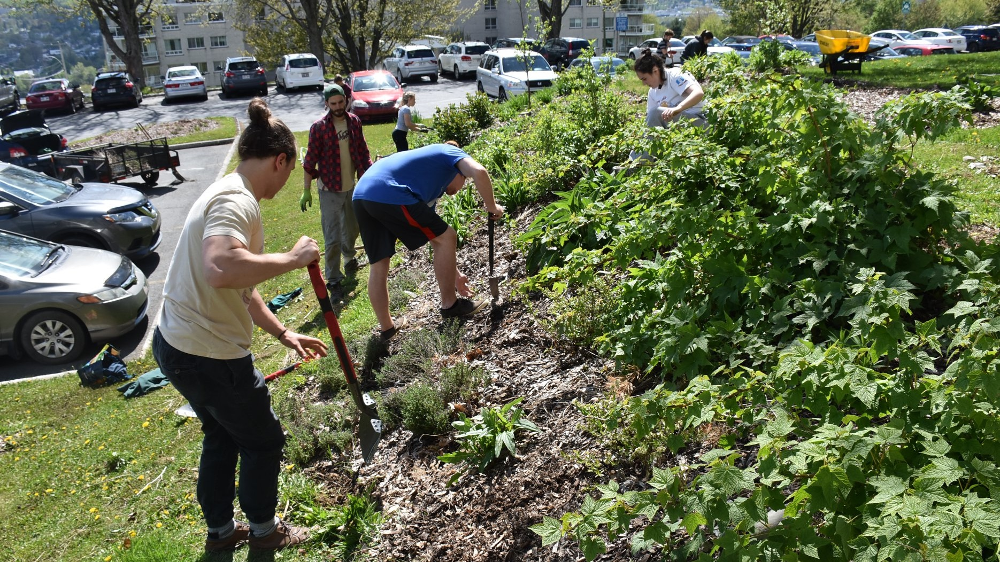

À propos du projet

Le problème du jardinage moderne
De nos jours, avec tous les produits transformés qui se retrouvent dans notre panier d’épicerie, une bonne majorité de la
population admet le jardinage serait une solution plus saine. Cependant, étant donné la complexité de cette pratique, seulement
une petite partie des gens s’en donnent réellement la peine.
Le problème avec le jardinage moderne est simple : nous tentons trop d’aller à l’encontre de la nature. Il n’est pas
surprenant de devoir désherber régulièrement, puisque nos plantations travaillent d’elles-mêmes pour remplir les vides dans
le sol, qui sont comme des plaies à cicatriser.
La solution : l’implantation d’une forêt nourricière
La solution pour minimiser l’entretien de nos potagers est donc le suivant : il suffit de s’inspirer de la nature elle-même!
Une forêt, par exemple, n’a pas besoin de l’intervention humaine pour subsister, alors il devrait en être de même pour nos jardins!
Un principe utilisé par les anciennes civilisations refait alors surface, sous la nouvelle désignation de « forêt nourricière ».
Cette méthode consiste à créer un petit écosystème de plusieurs végétaux de différentes tailles, soit des petites plantes, des
arbustes et des arbres. Chacun de ces morceaux de casse-tête a alors sa fonction bien précise, ce qui fait qu’au final, ils se
complètent les uns et les autres.
Toutefois, la différence avec une forêt conventionnelle et cet écosystème dans notre jardin est la sélection de plantes.
Puisque nous visons l’alimentation, le choix de végétation sera orienté vers cet objectif. En guise d’exemple, les arbres
pourraient être des arbres fruitiers, les arbustes donneraient des baies et les petites plantes seraient en réalité des
plantations de légumes.
Les principaux avantages environnementaux
Une des pratiques les plus désastreuses pour l’environnement est l’agriculture de masse. Le problème est que de grands
territoires sont dénudés pour produire de la nourriture, sans se soucier d’optimiser l’espace disponible.
De plus, après quelques années, le sol ne parvient plus à se regénérer et ne contient donc plus assez de nutriment pour
la cultivation. Les grandes compagnies agricoles à la tête de ces activités décident alors souvent de procéder au déboisement
d’un autre territoire, ce qui constitue à détruire un autre endroit.
Grâce à la pratique de la forêt nourricière, il est donc possible de produire une plus grande quantité de nourriture
dans un plus petit espace. En outre, puisque le jardin-forêt est un écosystème complet, il se regénère par lui-même, donc
ce n’est pas nécessaire de déplacer l’emplacement des cultures après quelques années.
Les obstacles aux « jardins-forêts »
Bien qu’il serait idéal que cette pratique soit d’envergure mondiale, elle présente aussi son lot d’obstacles.
Premièrement, l’implantation d’une forêt nourricière est loin d’être simple. Malgré que l’entretien soit minime comparément
au jardinage traditionnel, le travail initial pour mettre en place de telles installation est d’une beaucoup plus grande envergure.
Deuxièmement, la récolte d’un jardin-forêt doit souvent s’effectuer manuellement. Cette méthode de cultivation est donc
hors d’atteinte des entreprises multinationales agricoles, pour qui la production de masse s’effectue grâce à des machines.
Un effort collectif
Pour implanter ce système écologique à l’échelle planétaire, il va impérativement falloir se questionner sur notre façon
de cultiver. Au lieu de laisser notre alimentation dans les mains des grandes entreprises, nous devrions plutôt nous en
charger à plus petite échelle.
Pour encourager de telles pratiques, une bonne solution serait d’instaurer des jardins-forêts dans des régions
urbaines ou dans des endroits communautaires, afin que tout le monde y ait accès et puisse en profiter.
Sources bibliographiques :
- WIKIPÉDIA. L’encyclopédie libre, « Jardin-forêt »,
[En ligne], 8 novembre 2018, (Page consultée le 26 février 2019)
- PERMACULTURE DESIGN. Bureau d’étude, « Zoom sur la forêt comestible »,
[En ligne], 18 décembre 2012, (Page consultée le 29 février 2019)
- PERMACULTURE EN CLIMAT FROID. Wen Rolland,
« La forêt nourricière, s’inspirer de la forêt ! »,
[En ligne],(Page consultée le 29 février 2019)